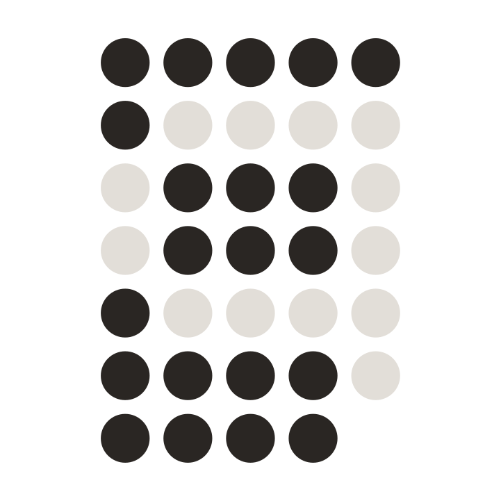

An editor that stays out of the way
Multiple cursors, folding, split view, minimap, sticky scroll, outline, soft wrap and an optional Vim mode. Tree-sitter colours for some twenty languages.
Editing →
qellA quiet, native code editor.
Written in Rust. Looks like a terminal. Opens instantly. Language servers, git, tests, a terminal, Kubernetes and AWS in one window — and nothing running in the background you didn't ask for.
Version 0.1 · preview · MIT/Apache-2.0
No telemetry. No auto-updates. No extension marketplace pulling code at start-up. No language server downloaded behind your back.
Missing a tool? Qell tells you, in plain words, the one command to
install it — and lets you decide. Your kubectl, your
aws, your gopls, your shell.
Lists refresh only while you look at them. Tests run when you click ▶. The daily log talks to an LLM only when you ask it to.
Multiple cursors, folding, split view, minimap, sticky scroll, outline, soft wrap and an optional Vim mode. Tree-sitter colours for some twenty languages.
Editing →Completion, hover, go to definition, rename, diagnostics, signature help, inlay hints and format on save — with the servers you already have.
Languages →Status in the tree, changes in the gutter, stage a hunk, blame, the commit graph, branches, stash and a one-click merge conflict resolver.
Git →Go, Rust, Jest, Vitest and pytest. Click beside a test to run it in the terminal and see ✓ or ✗ — a Tests tab jumps to what failed.
Tests →On the Alacritty core: true colour, tabs, mouse selection, shells that come back where they were.
Terminal →Pods, deployments, logs, shells, port-forwards and edit-to-apply,
from the keyboard, through your own kubectl.
Lambda, ECS, CloudFront, CodePipeline, S3, SQS and more — read-only,
through your own aws CLI and SSO sessions.
What you committed, saved, tested and ran in the terminal, summed up by the LLM you choose. Stays on your machine, secrets masked.
Daily log →Commands written in any language that targets wasm32, sandboxed, with no access to files or the network.
Plugins →


Download Qell.app from the
latest release,
move it to Applications. It isn't notarised yet: right-click → Open, once.
tar xzf qell-*-linux-x86_64.tar.gz
cd qell-*-linux-x86_64 && ./install.shgit clone https://github.com/sudo-bngz/qell
cd qell && cargo install --path crates/qell-app